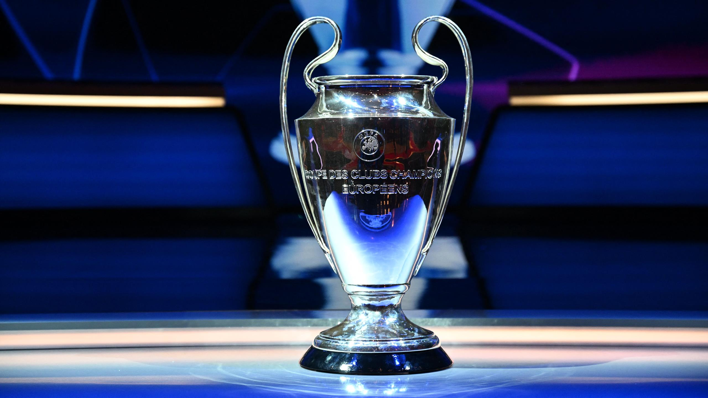
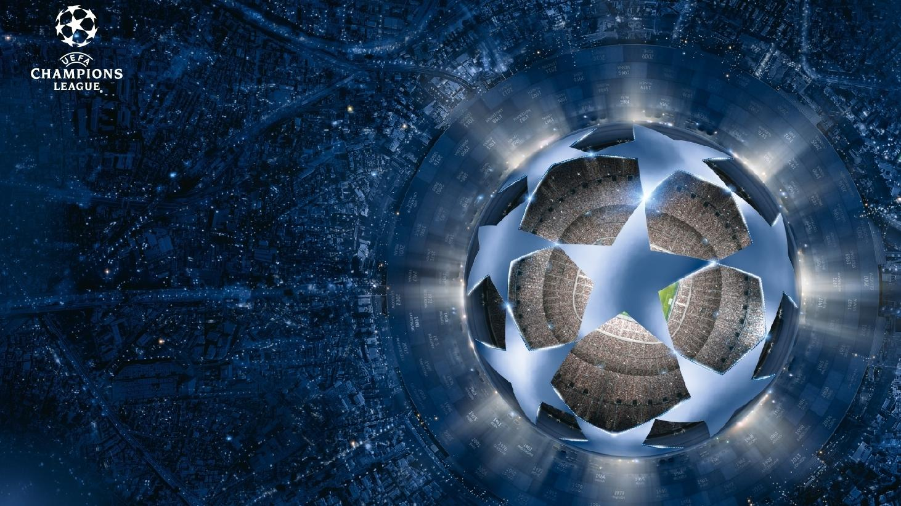

Champions League
The UEFA Champions League (abbreviated as UCL, or sometimes, UEFA CL) is an annual club football competition organised by the Union of European Football Associations (UEFA) and contested by top-division European clubs, deciding the competition winners through a round robin group stage to qualify for a double-legged knockout format, and a single leg final. It is one of the most prestigious football tournaments in the world and the most prestigious club competition in European football, played by the national league champions (and, for some nations, one or more runners-up) of their national associations.
Introduced in 1955 as the Coupe des Clubs Champions Européens (French for European Champion Clubs' Cup), and commonly known as the European Cup, it was initially a straight knockout tournament open only to the champions of Europe's domestic leagues, with its winner reckoned as the European club champion. The competition took on its current name in 1992, adding a round-robin group stage in 1991 and allowing multiple entrants from certain countries since the 1997–98 season. It has since been expanded, and while most of Europe's national leagues can still only enter their champion, the strongest leagues now provide up to four teams. Clubs that finish next-in-line in their national league, having not qualified for the Champions League, are eligible for the second-tier UEFA Europa League competition, and since 2021, for the third-tier UEFA Europa Conference League.
In its present format, the Champions League begins in late June with a preliminary round, three qualifying rounds and a play-off round, all played over two legs. The six surviving teams enter the group stage, joining 26 teams qualified in advance. The 32 teams are drawn into eight groups of four teams and play each other in a double round-robin system. The eight group winners and eight runners-up proceed to the knockout phase that culminates with the final match in late May or early June. The winner of the Champions League qualifies for the following year's Champions League, the UEFA Super Cup, and the FIFA Club World Cup.
Spanish clubs have the highest number of victories (19 wins), followed by England (14 wins) and Italy (12 wins). England has the largest number of winning teams, with five clubs having won the title. The competition has been won by 22 clubs, 13 of which have won it more than once, and eight successfully defended their title. Real Madrid is the most successful club in the tournament's history, having won it 14 times, including the first five seasons and also five of the last nine. Only one club has won all of their matches in a single tournament en route to the tournament victory: Bayern Munich in the 2019–20 season. Real Madrid are the current European champions, having beaten Liverpool 1–0 in the 2022 final.
Champions League Quiz
Test your knowledge of the Champions League with the following questions:
- Which team has won the most Champions League titles?
- Which team has the most runners-up finishes in the Champions League?
- Which team won the most recent Champions League final?
Hint: The team with the most Champions League titles has also won the most recent Champions League final
Answers are as of the 22-23 season